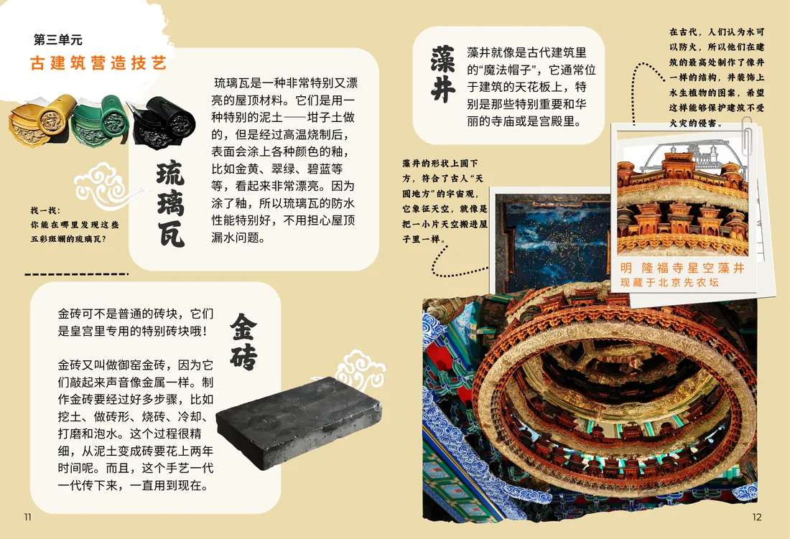
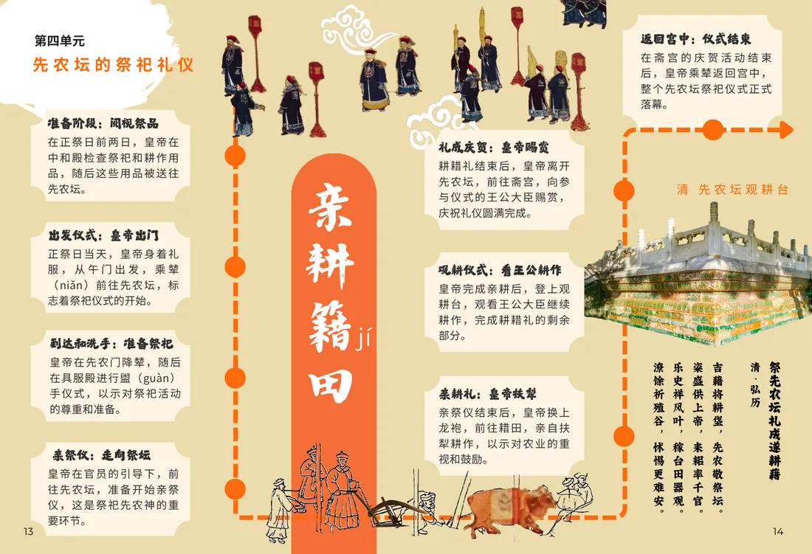

产品版
把古建筑的“看”变成“读”。设计了两套面向青少年的古建筑研学手册（v4.1 与低龄段 v3.0 加强版）加一套中轴线书签——用手绘插画和逐层拆解，让斗拱、屋顶等级、空间秩序这些“看不懂的复杂”，变成可以一页页读下去的东西。
设计版
插画 + 信息层级的双线设计：插画建立审美入口，拆解图与文字承担知识传递。中轴线书签系列以北京中轴线的 5 处地标为单元，把城市空间秩序做成可收藏的单页。
研学手册
插画设计
信息可视化
中轴线
手册内页
古建筑研学手册 · 内页预览

